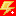
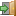
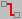

.lpl) uit de map panels.
.lpl-bestand.

). Zie Simulatie.
Bovenaan het venster staan twee rijen knoppen: de titelbalk met de algemene knoppen, en daaronder de bewerkknoppen. De bewerkknoppen zijn verborgen tijdens de simulatie.
| Knop | Naam | Wat doet het? |
|---|---|---|
| Paneelkeuze | Opent een menu met een nieuw standaardpaneel en kant-en-klare voorbeelden. Zie Paneel & raster. |
| Open paneel | Opent een bewaard paneel (.lpl) uit de map panels. |
| Paneel opslaan | Bewaart het huidige paneel als .lpl-bestand. |
| Schermkopie | Zet een afbeelding van het paneel op het klembord, om bijvoorbeeld in een tekstverwerker te plakken. |
| Start simulatie | Schakelt tussen bewerken en simuleren. Tijdens de simulatie is de knop rood (  ). Zie Simulatie. | |
| Help | Opent deze help. | |
| Info | Toont informatie over het programma. | |
 | Afsluiten | Sluit het programma. |
| Knop | Naam | Wat doet het? |
|---|---|---|
 | Verwijder geselecteerd object | Verwijdert het object dat je via het rechtsklikmenu hebt geselecteerd. Zie Objecten bedienen. |
 | Verwijder verbindingen | Verwijdert alle draden van het paneel. De onderdelen blijven staan. |
 | Raster | Toont of verbergt het raster op het paneel. |
 | Richtlijnen | Zet de hulplijnen aan of uit die verschijnen terwijl je een object versleept. |
 | Kader | Teken een kader rond object(en). Zie Paneel & raster. |
 | Titel wijzigen | Geeft het paneel een andere titel. |
 | Instellingen | Opent de instellingen van paneel, onderdelen en hints. Zie Instellingen & taal. |
Onderaan het venster toont de statusbalk informatie over het object onder de muis:
Helemaal rechts kies je de taal met de vlaggetjes. Zie Instellingen & taal.